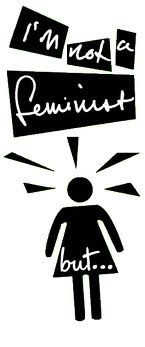

|
|

چرا برخی زنان از «فمینیسم» می ترسند؟
برگردان: نیکزاد زنگنه
سه شنبه19 شهریور 1392
فمینیسم یک اصطلاح دو قطبی است. شما می توانید آن را به عنوان روش زندگی خود انتخاب کنید یا تلاش کنید اصلا درگیرش نشوید. من شخصا مدت هاست به سبک زندگی فمینیستی معتقد هستم اما حتی تا این اواخر بحث های مرتبط با حقوق زنان را با عبارت مخوف «من فمینیست نیستم ولی...» شروع می کردم. چرا من اینقدر مردد بودم که خودم را به عنوان یک فمینیست معرفی کنم؟ حقیقت این است که من حتی نمی دانستم فمینیسم درباره چه سخن می گوید چه برسد به اینکه بدانم چه حسی را القا می کند. من تصورات اشتباهی در مورد فمینیسم داشتم. مهم تر از همه اینکه نمی دانستم من به عنوان یک زن همواره در حال سرکوب شدن هستم.

مثلا در خانه ما پدرم یک مردسالار تمام عیار بود و این به هنجار به نظر می آمد. وقتی من و خواهرم می خواستیم از محله خود خارج شویم، پدرم اعتراض می کرد که فضا امن نیست و این کار می تواند خطرناک باشد. این تنها نظر پدرم نبود. مادرم و دیگر زنان فامیل نیز همینطور فکر می کردند. همیشه می شنیدیم: «ممکنه خطرناک باشه. همین جا جاتون بهتره». خب من هم می خواستم در شرایط امن قرار بگیرم. چه کسی نمی خواهد؟ و احساس می کردم هرکاری که خانواده برایم انجام می دهند برای این است که بهتر می دانند به چه چیزهایی احتیاج دارم. هیچ وقت به این فکر نمی کردم که این رفتارها ناشی از تبعیض جنسیتی است که به شدت در خود زنان هم درونی شده است. نمی دانستم ما با نقش های جنسیتی سختگیرانه ای زندگی می کنیم و همیشه فکر می کردم این روش زندگی همان چیزی است که باید باشد.
این وضعیت تا زمانی که از روی کنجکاوی شروع به خواندن متون فمینیستی کردم، ادامه داشت. پس از آن تازه فهمیدم چقدر شیوه تربیت من ناشی از یک دنیای مردسالار است. اما حتی پس از دانستن این که می توانم این هنجارها را مورد پرسش قرار دهم، باز هم حس می کردم فمینیسم برای من نیست. من می خواستم از نقش های جنسیتی محدود کننده رها شوم اما همزمان نیاز به تایید شدن نیز داشتم. من نمی دانستم که پیام فمینیسم، تحقق برابری جنسیتی پایه ای است اما چون ما در دنیایی زندگی می کنیم که ویژگی های زنان و زنانگی ضعیف و فرودست تلقی می شود، فمینیسم یک ایده رادیکال به نظر می آید. به همین خاطر در حالیکه آن را قلبا قبول داشتم اما گمان می کردم که بیشتر از حد نیاز من، رادیکال و انقلابی است. اینک به خوبی می دانم که من از این برچسب می ترسیدم، نه از مفهومی که ارائه می کرد.این ترس مانع از این می شد که فمینیسم را به طور کامل به عنوان سبک زندگی خود انتخاب کنم. این ترس همچنان با من بود تا زمانی که به حدی بزرگ تر شدم که توانستم با سلیقه و تمایل خودم به اطلاعات دسترسی پیدا کنم.
پیش از این اتفاق، تمام دانش من درباره فمینیسم به سخنرانی یک روزه درباره کنوانسیون «سنکا فالز[1]» در دبیرستان محدود می شد به همین خاطر من در تمام طول نوجوانی فکر می کردم فمینیسم فقط یک جنبش است که توسط و برای زنان سفید پوست آمریکایی ایجاد شده است و جنبشی نیست که من تمایل داشته باشم بخشی از آن باشم. اما بعدا زمانی که تلاش می کردم به ریشه های دومنیکنی[2] خود برگردم، کتاب «دوران پروانه ها[3]» اثر «جولیا آلوارز[4]» را خواندم. این کتاب یک روایت داستانی از زندگی «خواهران میرابال[5]» در جمهوری دومنیکن است که در زمان استقرار دیکتاتوری در آن کشور، برای آزادی مبارزه می کردند. با خواندن این کتاب دریافتم که ما زنان در نقاط مختلف دنیا تاریخ، فرهنگ و شیوه زندگی یکسانی را تجربه می کنیم. داستان قدرت و شجاعت این خواهران مبارز، اولین پایه های فمینیسم را در وجود من بنیان گذاشت. این زنان در دوره ای زندگی می کردند که اصلا نمی توانستند از مرزهای تعیین شده تخطی کنند چراکه پیامد بیرون رفتن از این مرزهای تعیین شده چیزی فراتر از منفور شدن و تحت فشار اجتماعی قرار گرفتن بود. این خواهران در نهایت به خاطر مبارزات و اقدامات خود کشته شدند.
داستان خواهران میرابال در وجود من انقلابی ایجاد کرد. من روش زندگی آنها را به عنوان راهی برای مبارزه مدنی با تمرکز بر حقوق زنان و دختران دیدم. درس دیگری که این داستان به من داد این بود که فمینیست بودن می تواند خطرناک هم باشد. درست مانند خواهران میرابال که به جرم سخن گفتن علیه یک دیکتاتور سرکوب گر کشته شدند، گاهی زنانی که برای تغییر هنجارهای اجتماعی تلاش می کنند، در معرض طرد شدن از طرف خانواده و دوستان قرار می گیرند یا حتی با حاکمیت نیز درگیر می شوند.
«لیدیا کاچو[6]» فمینیست، روزنامه نگار و مدافع حقوق بشر در مکزیک به خاطر طرح مبحث حقوق زنان بارها تهدید به تجاوز و قتل شده است. در افغانستان، «ناجیه صدیقی[7]» رئیس مرکز امور زنان و مدافع خستگی ناپذیر پیشرفت زنان، توسط دو مرد مسلح به قتل رسید. «حنیفه صافی[8]» رئیس پیشین این مرکز نیز در جریان یک بمب گذاری در اتومبیل شخصی اش، کشته شده بود. در تمام نقاط دنیا داستان های مشابهی برای زنانی که مورد مسائل زنان سخن گفته اند، اتفاق افتاده است. حتی در کشورهای که زنان در آنها برای فمینیست بودن مورد آزار و اذیت قرار نمی گیرند، دشواری ها و مرزهای بسیاری وجود دارد تا زنان بتوانند خود را آزادانه فمینیست بنامند. شاید همه ما مثل خواهران میرابال، لیدیا کاچو، ناجیه صدیقی یا حنیفی صافی در معرض خطر آسیب یا مرگ نباشیم اما همچنان فمینیست بودن همیشه آسان و امکان پذیر نیست.
گاهی برخی زنان در تلاش هستند تا با فمینیسم ارتباط بر قرار کنند اما حس می کنند رابطه شان با این جنبش قطع شده است. جریان اصلی فمینیسم تمرکز نامتناسبی روی مشکلات زنان طبقه متوسط و متعلق به قومیت غالب دارد. مثلا به نظر غیر عملی است که یک زن برای اعتراض به تغییر نام خانوادگی زنان پس از ازدواج اعتراض کند در حالیکه خانواده اش گرسنه هستند. بسیاری از زنان نمی توانند کمتر کار کنند تا برای جنبش فمینیستی وقت بگذراند زیرا دیگر قادر به تامین معاش خود و خانواده شان نخواهند بود. زنان مهاجر، فقیر و مادران مجرد در زمره زنانی هستند که به دلیل فقدان بودجه، زمان و محدودیت های زبانی توانایی سازماندهی اعتراضات را ندارند. این در حالی است که اتفاقا این زنان بیشتر از هر گروهی به فمینیسم نیازمند هستند چرا که فمینیسم می تواند صدای این زنان بی صدا باشد.
از سوی دیگر مردسالاری به شدت تلاش کرده است تا زنان را متقاعد کند که دیگر نیازی به فمینیسم ندارند. اما این ادعا که «ما در حال حاضر برابر هستیم» به شدت اشتباه است. شاید زنان و مردان در برخی کشورهای توسعه یافته به سطوحی از برابری جنسیتی رسیده باشند اما این موضوع در مورد تمام جوامع دنیا صادق نیست. حتی در ایالات متحده زنان برای انجام ی کفعالیت مشابه، کمتر از مردان حقوق می گیرند. کماکان از زنان انتظار می رود که ازدواج کنند و بچه دار شوند و زنانی که چنین سبک زندگی را نمی پسندند، تحت فشار هنجاری شدید قرار می گیرند و طرد می شوند. حتی هنوز در بسیاری از نقاط جهان زنان به بهانه بی قیدی در امور جنسی یا مورد تجاوز قرار گرفتن، توسط بستگان خود به قتل می رسند. اگر واقعا – آنطوری که مردسالاری تلاش می کند به ما بقبولاند- دیگر به فمینیسم نیازی نیست، این موضوعات هم نباید وجود داشته باشد.
اکنون مدت زیادی است که من خودم را فمینیست می دانم چون به چیزی که ارائه می کند، اعتقاد دارم. با این حال همیشه در نظر دارم که هدف فمینیسم این نیست که تعداد زنانی که خود را فمینیست می دانند به رخ بکشد. این برچسب شاید برای تقویت احساس همبستگی در یک جنبش سودمند باشد اما برای سرنگون کردن یک نظام مردسالاری کافی نیست. آن دسته از ما که ابزاری برای ارتقا و بهبود وضعیت زنان در اختیار داریم باید برای حمایت از زنان بی صدای متعلق به اقلیت های نژادی، قومی و مذهبی تلاش کنیم. حتی اگر مشکلات این زنان شباهتی به مطالبات ما نداشته باشد. مهم تر از گفتن این که «من فمینیست هستم»، انجام اقدامات لازم برای پیشرفت زنان است و این چیزی است که ما را به یک فمینیست واقعی تبدیل می کند و من هیچ نکته ترسناکی در این کار نمی بینم که مرا از فمینیست خطاب شدن بترساند.
منبع: http://everydayfeminism.com/2013/07.../
نویسنده: Patricia Valoy
— -
[1]کنوانسیون حقوق زنان درشهر سنکافالز درسال۱۸۴۸ میلادی باحضور۳۰۰ شرکت کننده زن و مرد به منظور بحث درباره حقوق اجتماعی، مدنی،ومذهبی زنان تشکیل شد و بیانیه معروف به «سنکافالز» به مجمع عرضه شد. در این بیانیه خواستار حق رأی، مالکیت خصوصی و مستقل ،حق سرپرستی ونگهداری فرزندان در مواقع جدائی زوجین، حق ورود به سطوح عالیه تحصیلی واشتغال به کارهایی که در بازار کار وجود داشت شدند.
[2]Dominican
[3]Time of the Butterflies
[4] Julia Álvarez
[5] Mirabal sisters
[6] Lydia Cacho
[7]Najia Seddiqi
[8]Hanifa Safi